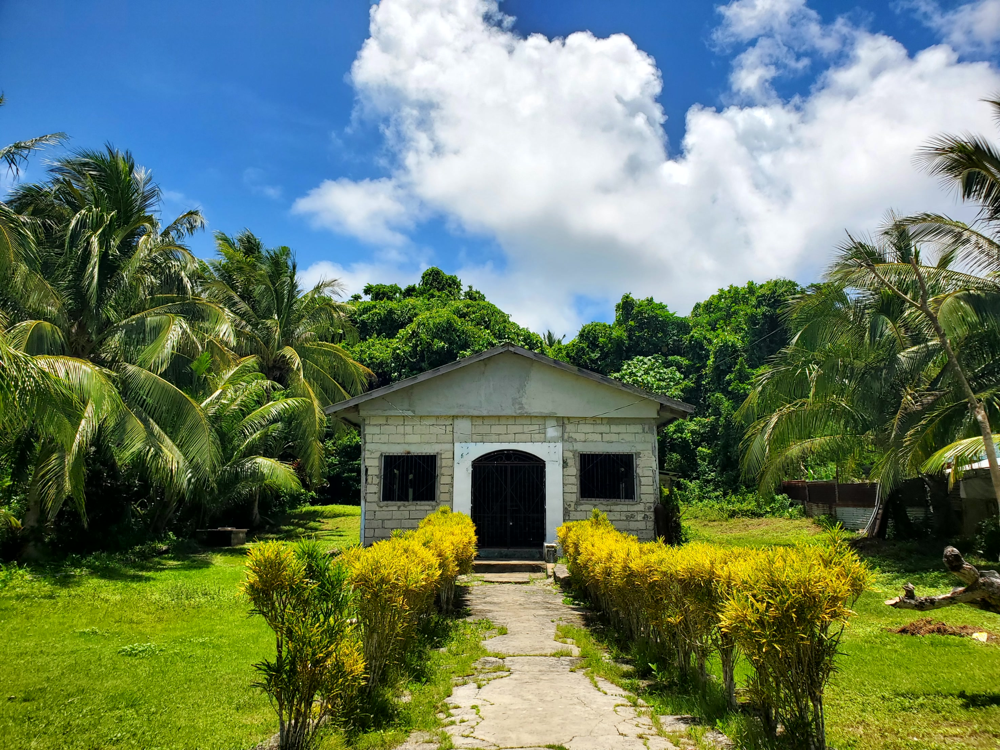

Craft & Heritage
Sitio San Roque
Home to Sapao's blacksmiths, coconut farmers, and shell and scabbard artisans — traditions passed down through generations and celebrated every August 20th at the Sr. San Roque fiesta.
Meet the Panday, the Paraglukad, and the shell and scabbard crafters, and see the fiesta that brings the whole sitio together each year.
Explore Sitio San Roque